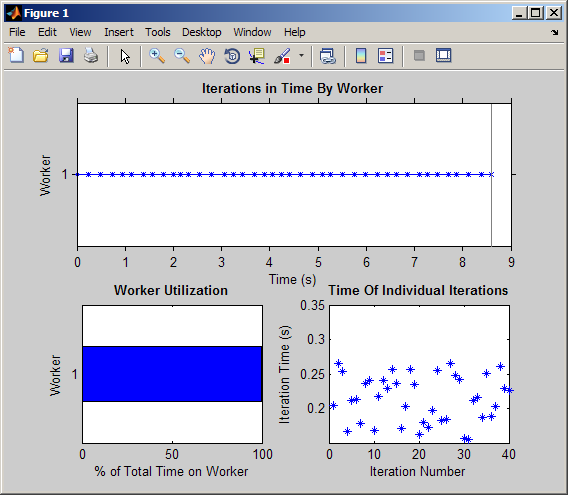
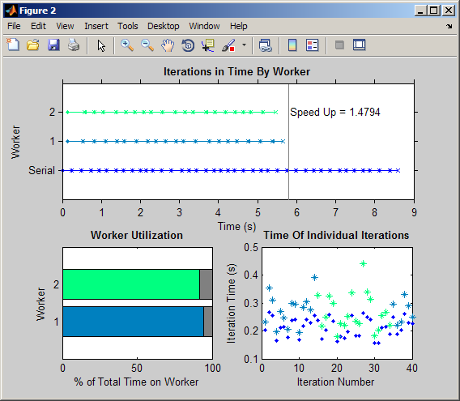
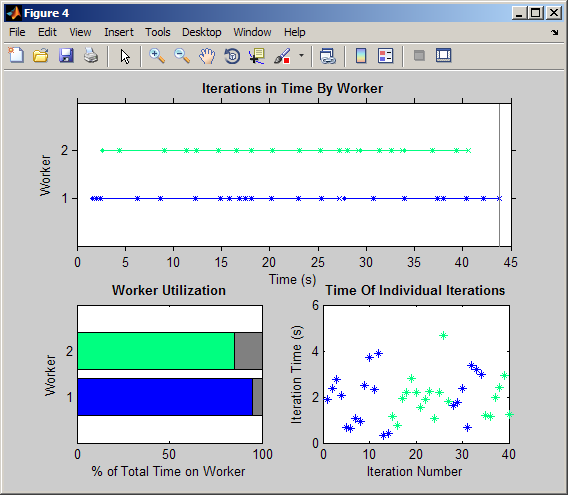
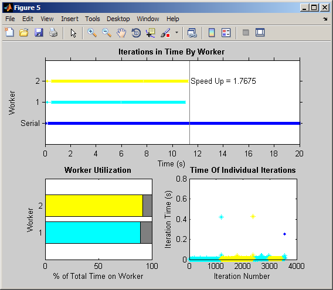
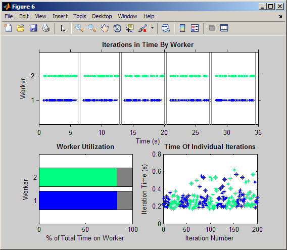

PAR TIC-TOC
This file demonstrates how to use the Par class object to time the execution time of each PARFOR loop. Here are the steps.
- Construct a Par object, with the number of iterations as the input. This constructs the object.
- Call Par.tic just inside the PARFOR loop. This records the start time of the iteration.
- Call Par.toc just before the end of the PARFOR loop. Store the output to the appropriate index of the Par object. This is necessary for PARFOR to recognize that the variable is sliced.
- Stop the measurement. This records the final end time.
- Visualize.
p = Par(n); (1)
parfor id = 1:n
Par.tic; (2)<usual computations>
p(id) = Par.toc; (3)
end
stop(p); (4)plot(p); (5)
Contents
Setting Up Default Cluster Config to Local
clear clusterConfig1 = 'local'; clusterConfig2 = 'local'; % Change to your neighborhood cluster if available. % clusterConfig2 = 'speedy';
PARFOR-LOOP with No Workers
n = 40; y = randi([500, 600], 1, n); a = zeros(n,1); % PARFOR-Loop (no workers) if matlabpool('size') > 0, matlabpool close, end p1 = Par(n); parfor id = 1:n Par.tic; a(id) = max(svd(rand(y(id)))); p1(id) = Par.toc; end stop(p1); plot(p1); % Plot using optional colormap input % plot(p1,@bone);
PARFOR with 2 Local Workers
matlabpool('open', clusterConfig1, 2) p2 = Par(n); parfor id = 1:n Par.tic; a(id) = max(svd(rand(y(id)))); p2(id) = Par.toc; end stop(p2); % Plot comparing with no workers plot(p2, p1); % Plot comparing with no workers using optional colormap input % plot(p2, p1, @cool); matlabpool close;
Starting matlabpool using the 'local' configuration ... connected to 2 labs. Sending a stop signal to all the labs ... stopped.
Using a Cluster (minimal data transfer)
This example uses a cluster. The random-sized matrices are generated within the loop so not much data is transfered to the workers.
n = 40; % Generate series of random numbers y = randi([600, 1200], 1, n); % Run on cluster, use a cluster configuration matlabpool('open', clusterConfig2, 2, 'FileDependencies', {'Par.m'}); p = Par(n); parfor id = 1:n Par.tic; a(id) = max(svd(rand(y(id)))); p(id) = Par.toc; end stop(p); plot(p); % Plot using optional colormap input % plot(p,@hot);
Starting matlabpool using the 'local' configuration ... connected to 2 labs.
Using a Cluster (large data transfer)
Now we generate the random-sized matrices outside of the loop and pass them to the cluster.
% Generate series of random-sized matrices yy = arrayfun(@(x) rand(x), y, 'UniformOutput', false); p = Par(n); parfor id = 1:n Par.tic; a(id) = max(svd(yy{id})); p(id) = Par.toc; end stop(p); % Plot using default colormap input plot(p); % Plot using optional colormap input % plot(p,@bone); matlabpool close
Sending a stop signal to all the labs ... stopped.
Parameter Sweep (Serial vs Parallel)
Run the parameter sweep example and compare serial and parallel.
% Run in serial p_serial = sweepExample(); % Run on cluster, use a cluster configuration % defaultParallelConfig('speedy'); % Run in parallel matlabpool('open', clusterConfig2, 2, 'FileDependencies', {'Par.m', 'sweepExample.m'}); % May want to use more workers % matlabpool('open', clusterConfig2, 4, 'FileDependencies', {'Par.m','sweepExample.m'}); p_parallel = sweepExample(); % Plot comparison using default colormap input % plot(p_parallel, p_serial); % Plot comparison using optional colormap input plot(p_parallel, p_serial,@jet); matlabpool close;
Starting matlabpool using the 'local' configuration ... connected to 2 labs. Sending a stop signal to all the labs ... stopped.
Concatenation of Par objects
Results of multiple parfor loops can be concatenated to see total efficency for the parallel part of the calculation.
% Run in parallel on local cluster matlabpool('open', clusterConfig1, 2, 'FileDependencies', {'Par.m'}); n = 40; y = randi([500, 600], 1, n); a = zeros(n,1); % PARFOR-Loop (no workers) pTotal = []; for ii = 1:5 yy = arrayfun(@(x) rand(x), y, 'UniformOutput', false); p = Par(n); parfor id = 1:n Par.tic; a(id) = max(svd(yy{id})); p(id) = Par.toc; end stop(p); pTotal = [pTotal, p]; end plot(pTotal); matlabpool close;
Starting matlabpool using the 'local' configuration ... connected to 2 labs. Sending a stop signal to all the labs ... stopped.